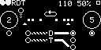

Upper LFSR Out
Output from the selected bit of the upper byte of the shift register.
Lower LFSR Out
Output from the selected bit of the lower byte of the shift register.
Clock In
Primary clock input.
1s In
Feeds 1s into the shift register when active.
Pattern Loop
Feed a gate or turn the knob clockwise to lock and loop the current shift register pattern.
D In
Gate input for the D flip flop (set knob to -10V).
T In
Gate input for the T flip flop (set knob to -10V).
Clock Out
Primary clock output.
D Out
D flip flop output (divides clock by 2 if D input is zero).
Inverted D Out
Inverted D flip flop output.
T Out
T flip flop output (divides clock by 4 if D and T inputs are zero).